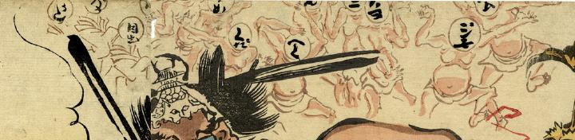

数珠繰りを見学する化物たち。体は人間そっくりなのだが、頭部には文字が書いてある。
著作者：河鍋狂斎／出典：親書誌：U426_nichibunken_0230：どふけ百万遍；ドウケヒャクマンベン／日付：2010／資源識別子：U426_nichibunken_0230_0004_0000
Copyright (c)2010- International Research Center for Japanese Studies, Kyoto, Japan. All rights reserved.